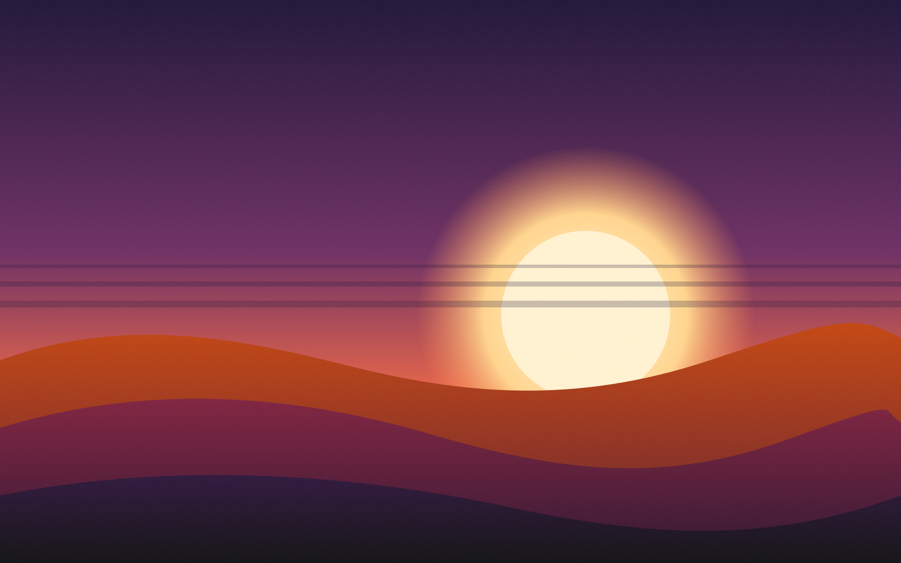

Deux fichiers.
Aucune dépendance, aucun framework imposé.
<link rel="stylesheet" href="fx.css"> <script src="fx.js" defer></script>
// Animations · Transitions · Mises en scène
Chaque effet porte un nom et une intention. Ajoutez un attribut à votre HTML, ou dites simplement à votre IA : « utilise pixel-dissolve sur les images ».
Effet : scroll-expand

// Manifeste
Avant, on partageait des bibliothèques de style. Avec l'IA, on partage des idées : un nom, une intention, un ressenti que n'importe quel assistant sait reproduire.
Cliquez, survolez, rejouez.
Aucune dépendance, aucun framework imposé.
<link rel="stylesheet" href="fx.css"> <script src="fx.js" defer></script>
Le nom de l'effet suffit. Réglages via des variables CSS.
<img data-fx="pixel-dissolve"
data-fx-cols="16" src="…">
line-mask pour les titres et page-wipe entre les pages.effects/line-mask.md et effects/page-wipe.md, réduit le mouvement si l'utilisateur le demande.